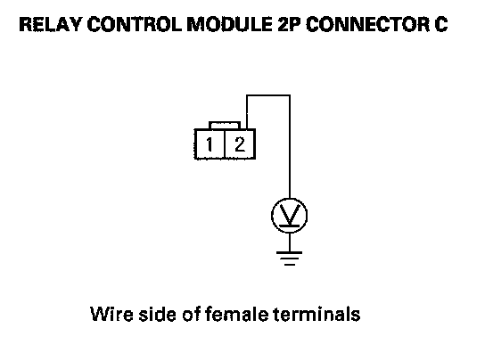
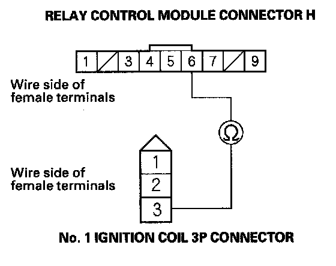
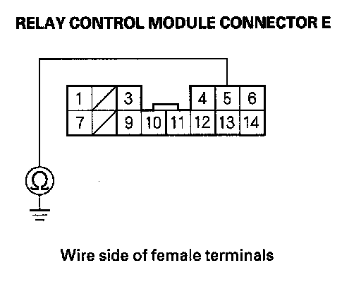
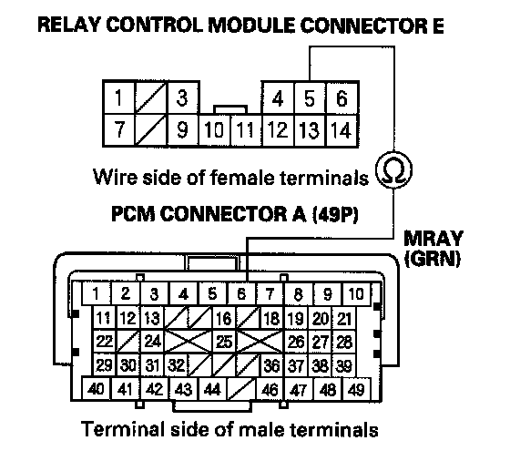

Ignition System: Testing and Inspection
Ignition Coil Relay Circuit Troubleshooting1. Check the No. 8 (15 A) fuse and No. 9 (15 A) fuse in the under-hood fuse/relay box.
Are the fuses OK?
YES - Go to step 2.
NO - Replace the fuse. If the fuse continues to blow, locate and repair the short in the circuit between the under-hood fuse/relay box and the ignition coils.
2. Remove the relay control module from the under-hood fuse/relay box, and test it.
Is the relay OK?
YES - Go to step 3.
NO - Replace the relay control module in the under-hood fuse/relay box.

3. Measure the voltage between the relay control module connector C terminal No. 2 and body ground.
Is there battery voltage?
YES - Go to step 4.
NO - Repair open in the wire between relay control module connector C terminal No. 2 and the main under-hood fuse box.

4. Check for continuity between the relay control module connector H terminal No. 6 and No. 1 ignition coil 3P connector terminal No. 3.
Is there continuity?
YES - Go to step 5.
NO - Repair open in the wire between the relay control module connector H terminal No. 6 and ignition coil 3P connector terminal No. 3.

5. Check for continuity between the relay control module connector E terminal No. 5 and body ground.
Is there continuity?
YES - Repair short in the wire between the relay control module connector E terminal No. 5 and the powertrain control module (PCM) (A6).
NO - Go to step 6.
6. Connect the Honda Diagnostic System (HDS) to the data link connector (DLC).
7. Turn the ignition switch ON (II).
8. Make sure the HDS communicates with the vehicle and the PCM. If it doesn't communicate, troubleshoot the DLC circuit.
9. Jump the SCS line with the HDS, then turn the ignition switch OFF.
NOTE: This step must be done to protect the PCM from damage.
10. Disconnect PCM connector A (49P).

11. Check for continuity between relay control module connector E terminal No. 5 and PCM connector terminal A6.
Is there continuity?
YES - The system is OK at this time. Check for loose or poor connections at the relay control module connector E and the PCM (A6).
NO - Repair open in the wire between the relay control module connector E terminal No. 5 and the PCM(A6).